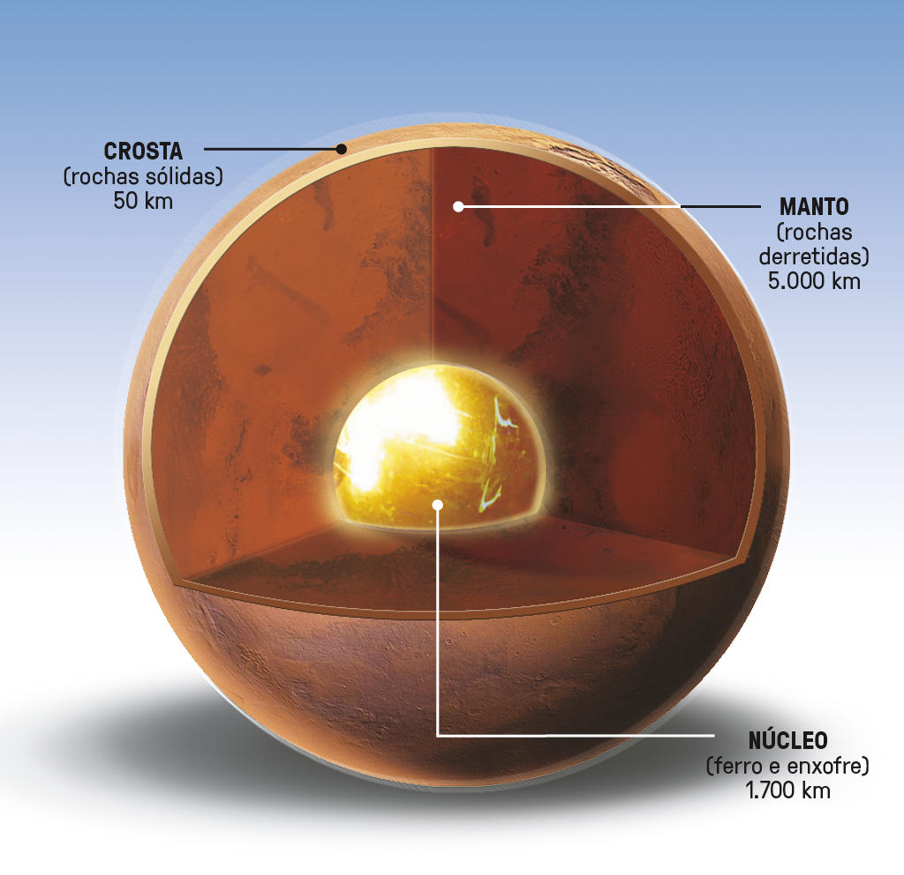

Marte
Nosso Vizinho Vermelho
O nome "Marte" tem raízes profundas na mitologia romana. Os romanos antigos associavam esse planeta ao seu deus da guerra, Marte, que era o equivalente do deus grego Ares. O planeta era observado no céu noturno e notado por seu brilho avermelhado, o que o tornava uma escolha apropriada para ser associado ao deus da guerra devido à sua aparência "sangrenta".
História e Observação
No século XIX, com o desenvolvimento de telescópios mais poderosos, os astrônomos começaram a estudar Marte mais detalhadamente. A observação de canais aparentes na superfície de Marte gerou especulações sobre a possibilidade de vida no planeta. Embora esses "canais" posteriormente se revelassem uma ilusão óptica, eles desencadearam um interesse crescente no estudo de Marte.
No século XX, a exploração espacial trouxe novos avanços na compreensão de Marte. As missões espaciais, como a Viking da NASA na década de 1970, forneceram imagens detalhadas da superfície e da atmosfera de Marte. Essas missões confirmaram a ausência de vida em sua forma conhecida, mas ainda mantiveram o fascínio científico por esse planeta como um objeto de estudo.

Composição Química e Geologia
A composição química da superfície de Marte é predominantemente rochosa e inclui minerais como basalto, hematita e sulfatos. Há também vestígios de outros elementos, como ferro, alumínio, magnésio, silício e traços de água congelada. Essa diversidade mineral revela uma geologia variada e intrigante em Marte, sugerindo a presença de recursos valiosos para futuras missões humanas.
E sobre a sua atmosfera, ela é composta principalmente de dióxido de carbono (CO2), que representa cerca de 95% de sua composição. Além do CO2, há traços de nitrogênio (cerca de 2,7%) e argônio (cerca de 1,6%). Essa atmosfera tênue e rica em CO2 é responsável por grande parte das características climáticas e geológicas do planeta, incluindo suas temperaturas extremas e variações sazonais.
O Futuro de Marte
Marte continua a ser um dos principais focos da exploração espacial. Planos para missões tripuladas, estudos geológicos detalhados e investigação de possíveis formas de vida são algumas das emocionantes direções futuras. A NASA e outras agências enviaram sondas e robôs, como o rover Curiosity, para investigar sua geologia e clima.
Empresários como Elon Musk têm planos ambiciosos de colonizar Marte. Essa visão de tornar Marte habitável é um tema emocionante na exploração espacial. À medida que aprendemos mais sobre sua história e potencial, nossa exploração e busca por respostas naquele planeta intrigante continuam a evoluir. Marte tem sido o alvo de inúmeras missões robóticas de exploração.

Curiosidades
Possibilidade de Vida: A descoberta de vestígios de água e minerais em Marte levanta questões sobre a possibilidade de vida passada ou presente. A busca por biomarcadores continua.
Condições Extremas: Marte tem um ambiente extremamente hostil para a vida como a conhecemos. A atmosfera é fina, composta principalmente de dióxido de carbono, e as temperaturas médias são muito frias. A falta de uma atmosfera densa também significa que a radiação solar é perigosa para qualquer forma de vida.
Sistema de Canais Marciano: no século XIX, astrônomos observaram "canais" em Marte, gerando especulações sobre a existência de vida. Esses canais posteriormente se revelaram uma ilusão óptica, mas a ideia persistiu na cultura popular.
Duas Pequenas Luas: Marte tem duas luas pequenas chamadas Fobos e Deimos. Elas são muito pequenas em comparação com a Lua da Terra e têm órbitas irregulares.